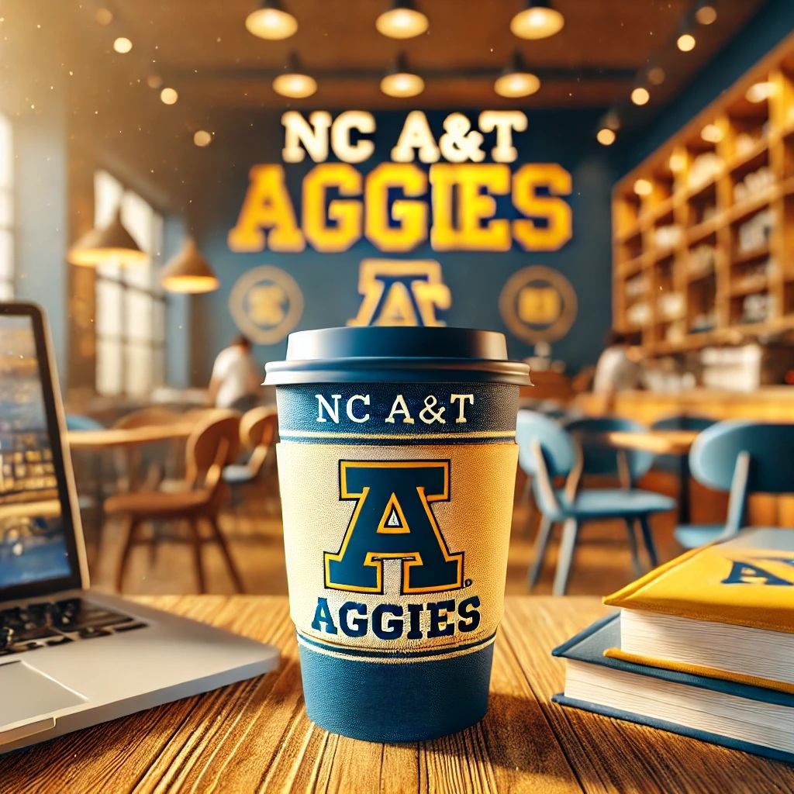

About Us

Welcome to Aggies Coffee House, where each cup of coffee is a celebration of flavor and a tribute to the rich coffee culture. Founded by a group of NC A&T students, our coffee house has quickly become a cornerstone of the students community here at NC A&T, offering a warm, inviting atmosphere that sparks creativity and conversation.
Our mission is to provide a unique coffee experience while promoting sustainability and community involvement.
Our Commitment to Sustainability
At Aggies Coffee House, sustainability is at the core of everything we do. From sourcing fair-trade coffee beans to implementing eco-friendly practices, we are dedicated to reducing our environmental footprint.
Community Involvement and Events
We believe in giving back to our community and actively participate in initiatives that mobilize the community on important issues. From sustainability workshops to community clean-up days, we are committed to making a positive impact.
Highlights of our annual events include:
- The "Aggies Artisan Fair" – a showcase for local crafts and artworks.
- "Coffee with a Cause" – where a portion of every coffee sold supports a local charity.
- Monthly "Poetry and Pastry Night" – a cozy evening of poetry readings accompanied by our delicious homemade pastries.
We invite you to join us at our next event and experience the warmth and vibrancy of our community engagements. Keep an eye on our social media pages and website for announcements on upcoming events!
Location
Aggies Coffee House is located at402 Laurel Street
Greensboro, NC 27405. See Google Maps for directions.
Contact Us
You can contact us byEmail: aggiescoffee@aggies.ncat.edu
Phone: (336)123-4567